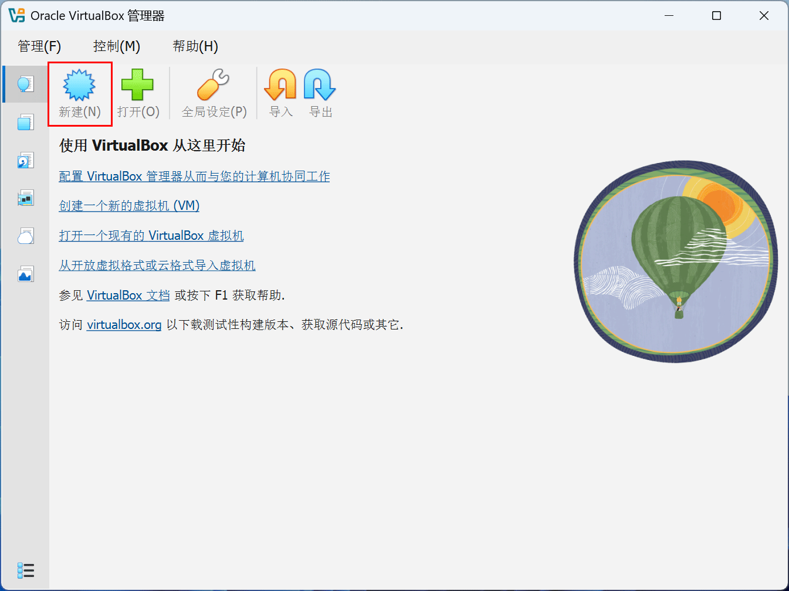
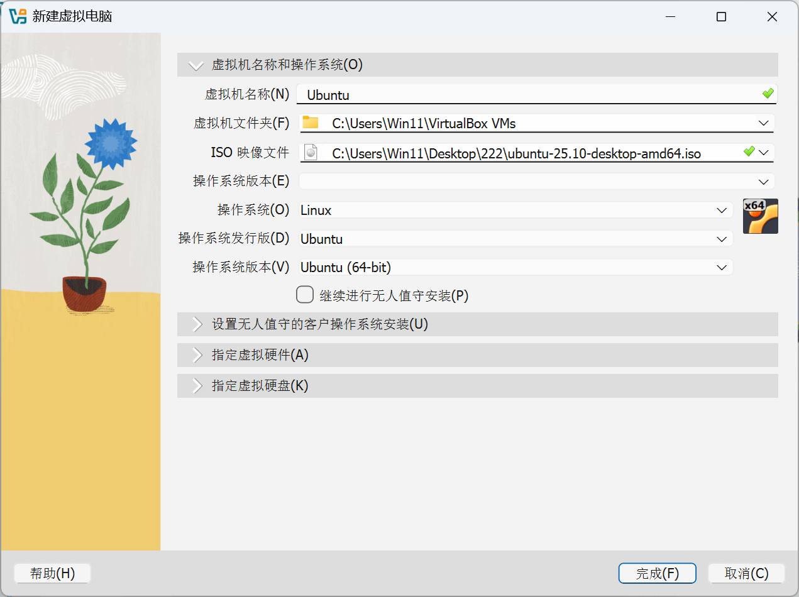
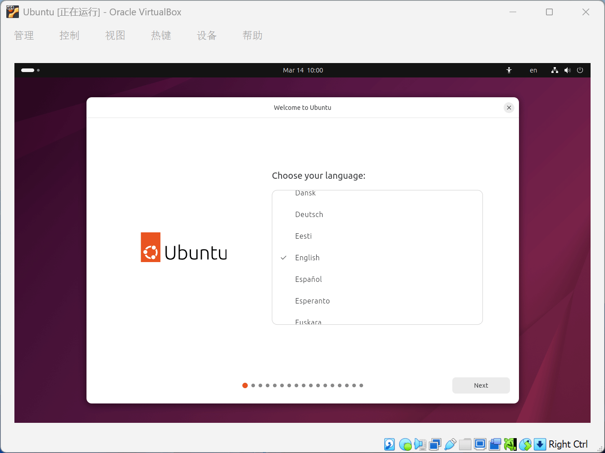
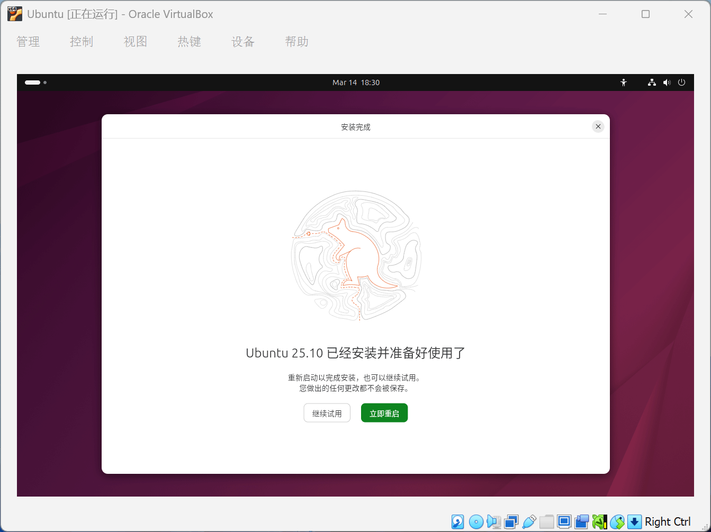
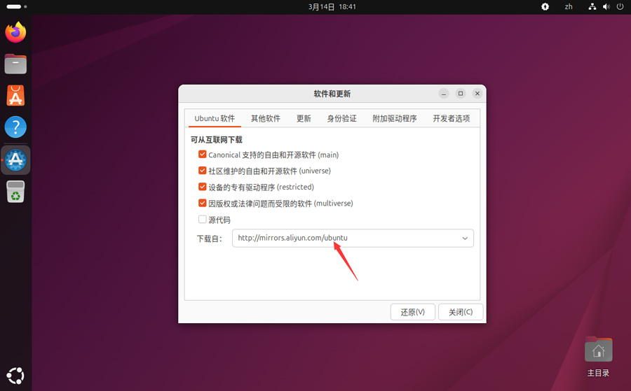
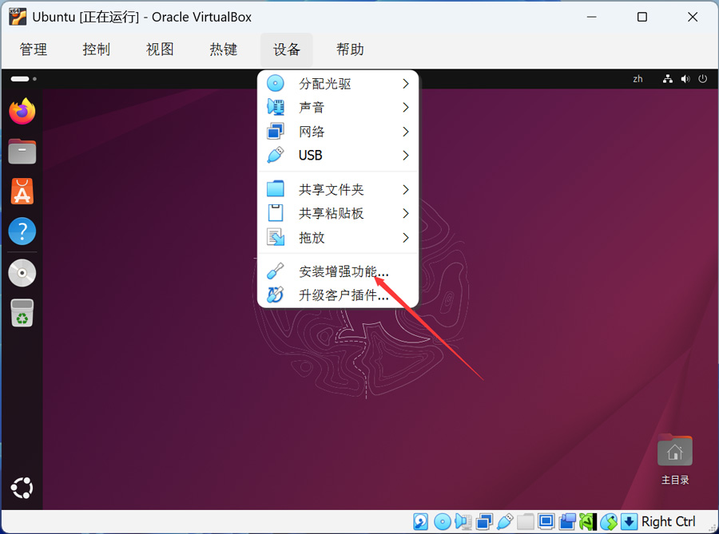

首先下载 VirtualBox 和 Ubuntu ISO
1、VirtualBox下载：点击下载>>
2、下载Linux系统：点击下载>>
安装好 VirtualBox，再安装 VirtualBox Extension Pack，支持USB 2.0 / 3.0，更好的设备支持。






VirtualBox 安装 Ubuntu 只需要：
1️⃣ 下载 VirtualBox
2️⃣ 下载 Ubuntu ISO
3️⃣ 创建虚拟机
4️⃣ 加载 ISO
5️⃣ 安装系统
6️⃣ 安装 Guest Additions 增强功能